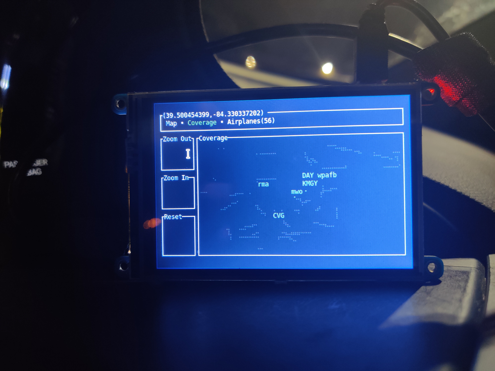
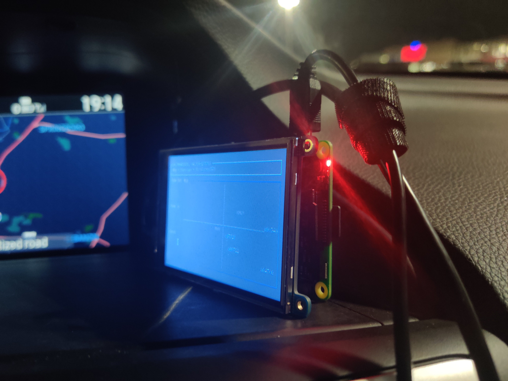
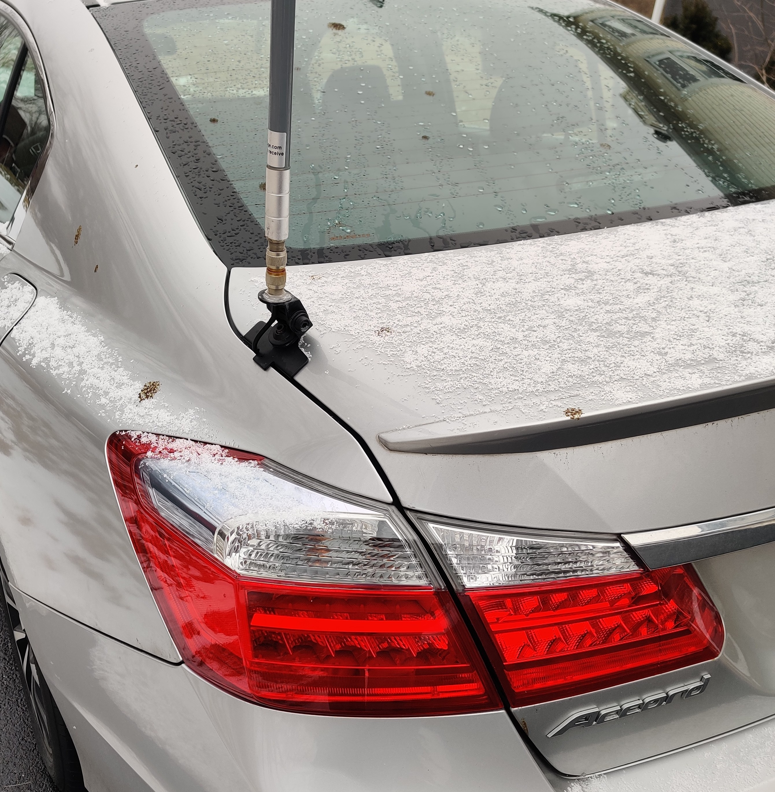
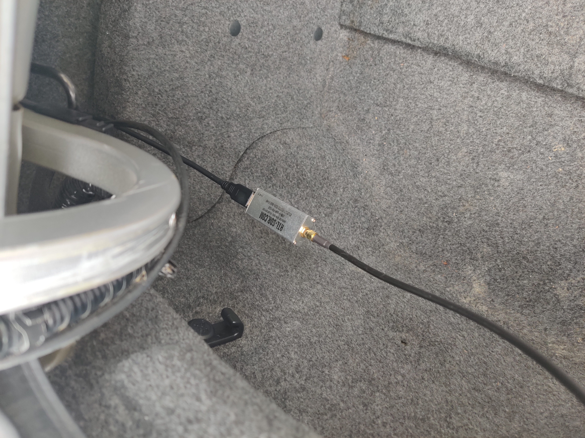
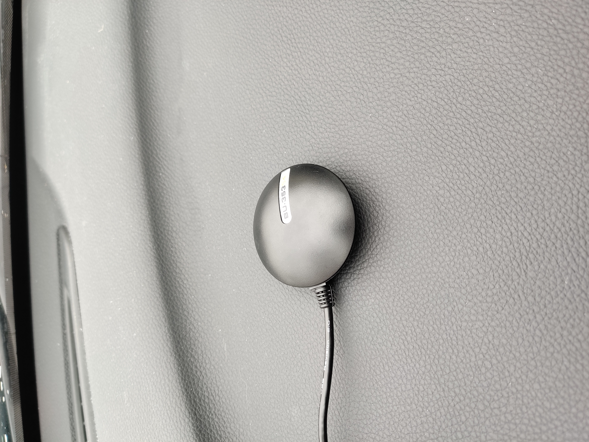

Raspberry Pi in-car ADS-B Display - with Rust!
last edited: 03/26/22
Do you have aircraft flying above your car, or just want to see all the aircraft around your area as you sit in the passenger seat
or just really nerdy and want to use the Rust language and a Raspberry Pi in your car?
This project will leave you with a Raspberry Pi touchscreen that uses our radar and dump1090_rs applications to do just that!
This project is entirely open-source, checkout the software on github:


Overview
The following is myself using the touchscreen controls and viewing the positions of about ~60 airplanes over my car.

Here we can see the aircraft info being updated to the table in real-time as we receive more messages.

We can also see all the positions of all airplanes we have captured.


Requirements
See quickstart for the base hardware requirements and software installation.
Hardware
New hardware
- Raspberry Pi (I have a Raspberry Pi 3 Model B Rev 1.2, but any version should work)
- N-Type Male to N-Type Male connector
- A car ;)
- RS-840 Original Comet Antenna Lip Mount - No Cable
- SMA Male to N Female Bulkhead
- PiTFT Plus 480x320 3.5"
- GlobalSat BU-353-S4 USB GPS
Car Mount
The lip mount car antenna makes you the real nerd.

rtlsdr
The rtlsdr software defined radio allows us to capture the airplanes emitted signal.

GPS
Using the radar --gpsd option and a gpsd daemon, we automatically get the lat and lon position.

Software
PiTFT Plus
You will need to following the instructions located on the adafruit site for installing the touchscreen drivers: link
gpsd
To use the radar --gpsd setting, you will need the GPS daemon installed. This works nicely when you are in a car, since the GPS will take care of always setting your new lat/lon position.
> apt install gpsd
Add your USB device to the config, for example adding a serial USB GPS device /dev/ttyUSB0.
> cat /etc/default/gpsd
# Default settings for gpsd.
START_DAEMON="true"
GPSD_OPTIONS=""
DEVICES="/dev/ttyUSB0"
USBAUTO="true"
Restart the gpsd service, or start it if not running.
> systemctl restart gpsd
dwm
This is the simplest X server display manager I can find, leaving our applications running nicely with the small ARM processor on board the raspberry pi. I also used a patch that adds an autostart script.
> git clone https://git.suckless.org/dwm
> curl -O https://dwm.suckless.org/patches/autostart/dwm-autostart-20210120-cb3f58a.diff
> git apply dwm-autostart-20210120-cb3f58a.diff
> make
> sudo make install
Apply changes to ~/.Xinitrc file. Depending on your shell, you will need to auto login to your
raspberry pi and run startx to start dwm.
> cat ~/.Xinitrc
exec dwm
st
Simple Terminal.
> apt install st
dump1090
systemd
This will start dump1090 and attach to an SDR at every bootup.
Note you will need to change ExecStart and WorkingDirectory to whatever location you installed dump1090 to.
> cat /etc/systemd/system/dump1090.service
[Unit]
Description=Start ADS-B Demodulation Server
After=network.target
[Install]
WantedBy=multi-user.target
[Service]
Type=simple
ExecStart=/home/pi/.cargo/bin/dump1090
WorkingDirectory=/home/pi/.cargo/bin
Restart=always
RestartSec=5
StandardOutput=syslog
StandardErorr=syslog
SyslogIdentifier=%n
> systemctl enable --now dump1090
radar
autostart
Add to dwm autostart file: ~/.autostart. This will automatically start radar in st.
The following is an example of the autostart.sh file that I use.
If you want more airports, check out the --aiports option: image.
{kind=link}
> cat ~/.dwm/autostart.sh
#!/usr/bin/sh
st -e ~/.cargo/bin/radar --lat="39.0" --long="-84.00" --scale="0.80" \
--gpsd --disable-lat-long \
--touchscreen \
--locations "(wpafb,39.827793,-84.045894)" "(KMGY,39.591672,-84.227865)" \
"(DAY,39.898899,-84.2287941)" "(CVG,39.0537296,-84.6500094)" "(CMH,39.9999399,-82.8893654)" \
"(IND,39.7168593,-86.2977839)" "(KAOH,40.7588499,-83.8936466)" "(FDY,40.6141522,-84.2637368)" \
"(fhq,39.4503696,-82.2616143)" "(mwo,39.4670316,-84.3879972)" "(rma,39.7298745,-84.8377054)" \
"(fma,38.2256493,-84.0172027)" "(fwa,41.0588807,-85.2668302)"